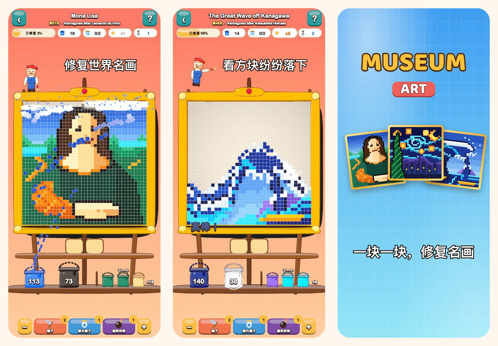

Museum Art
像素艺术色彩拼图
点击一种颜色，看方块纷纷落下。修复 51 幅像素画，从《蒙娜丽莎》到伊斯坦布尔、巴黎、罗马和纽约的街头。
在 App Store 下载
关于游戏
Museum Art 中的每幅画都由彩色方块组成。按颜色逐一清除方块，看画作重新焕发光彩。
玩法
- 点击接触最底行的色块，或点击架子上的颜料桶：方块会飞进自己的桶里。
- 上方的方块像沙子一样滑落，带来新的走法。
- 某种颜色还没有桶？先放进托盘上的罐子里。
- 托盘用得越少，获得的星星越多。
51 幅待修复的画作
- 从明亮简单的场景开始：热气球、帆船、小猫和灯塔。
- 大自然：雪峰、高山湖泊、樱花和黄昏的沙漠。
- 环游伊斯坦布尔、巴黎、罗马和纽约。
- 大师宝库：《神奈川冲浪里》《星月夜》《睡莲》《倒牛奶的女仆》《日出·印象》和《蒙娜丽莎》，以像素画重新演绎。
轻松又公平
- 每一关都能不用道具通关，重试免费。
- 难关时的道具：锤子、额外罐子和颜料炸弹。
- 随时放大查看细节。
- 每幅画都附有一则趣闻。
- 支持 19 种语言。